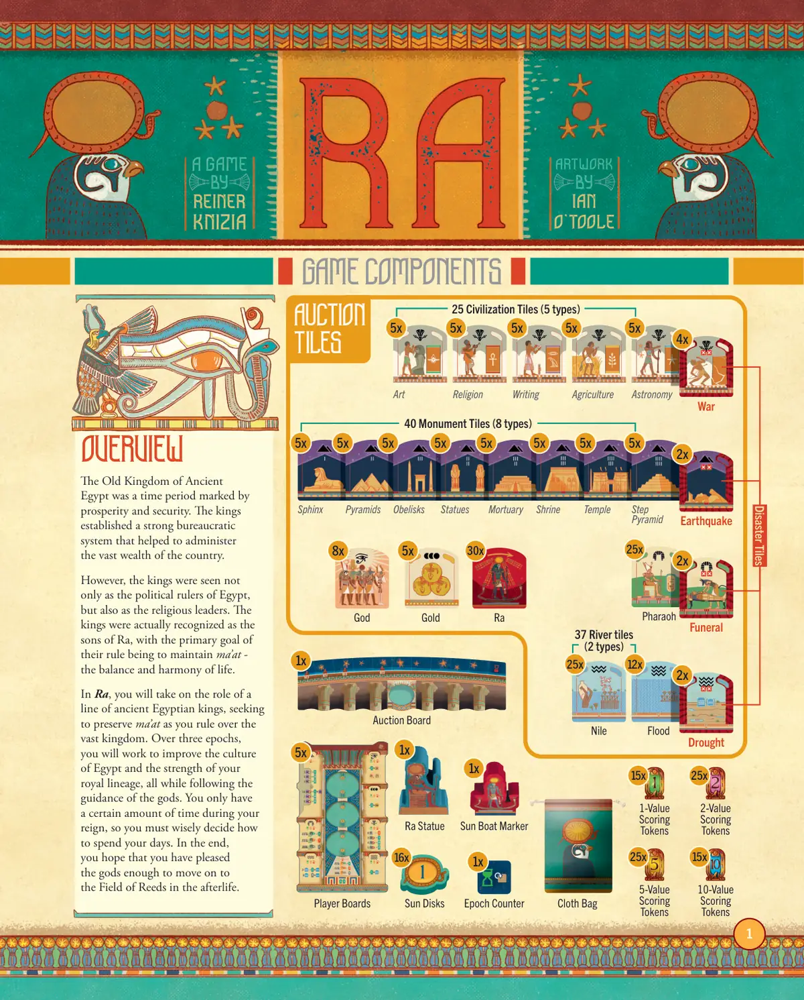
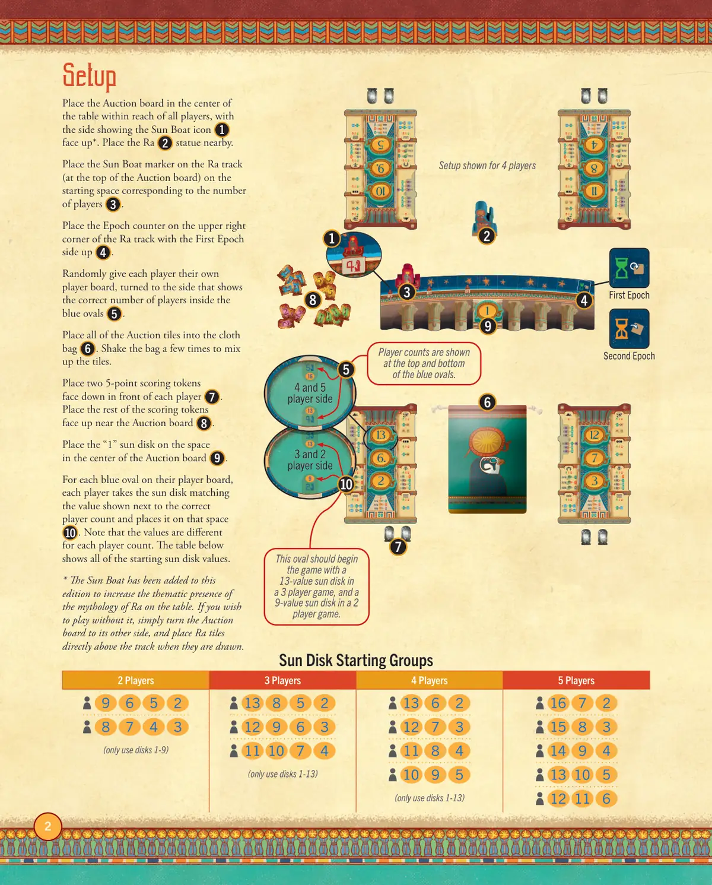
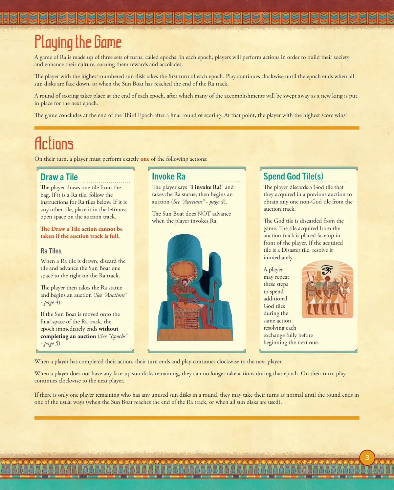
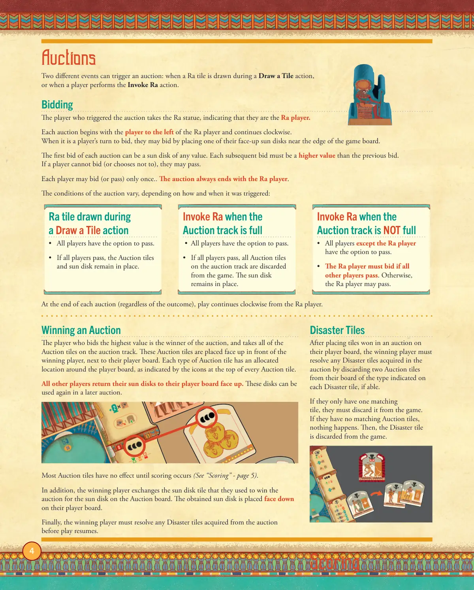
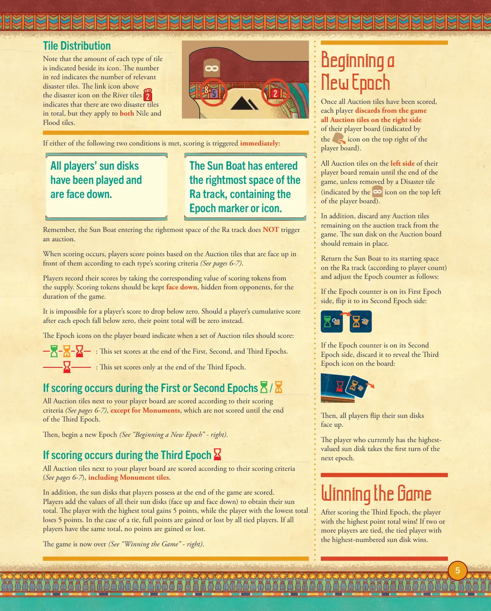
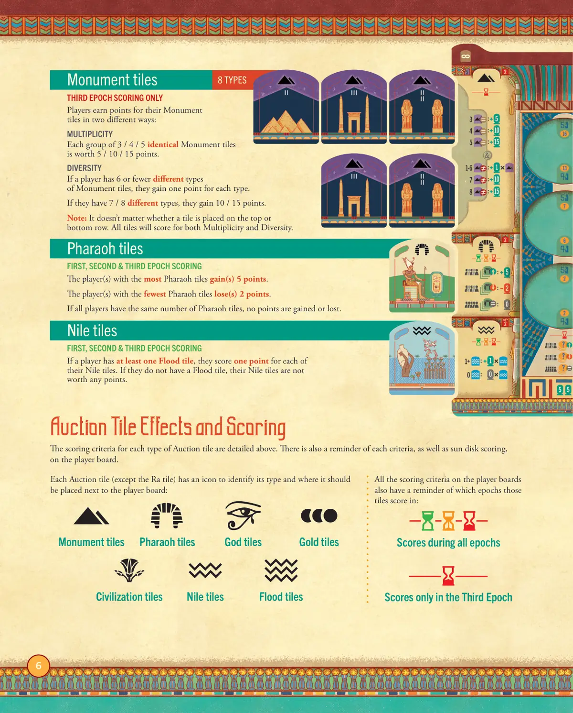
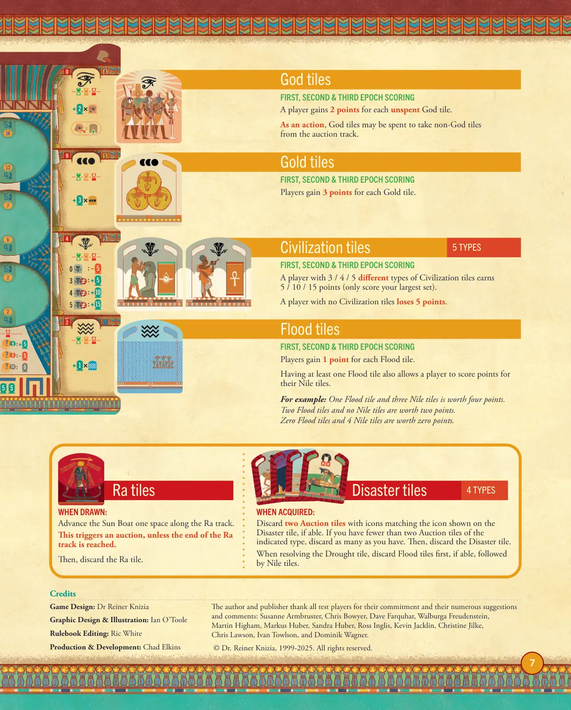
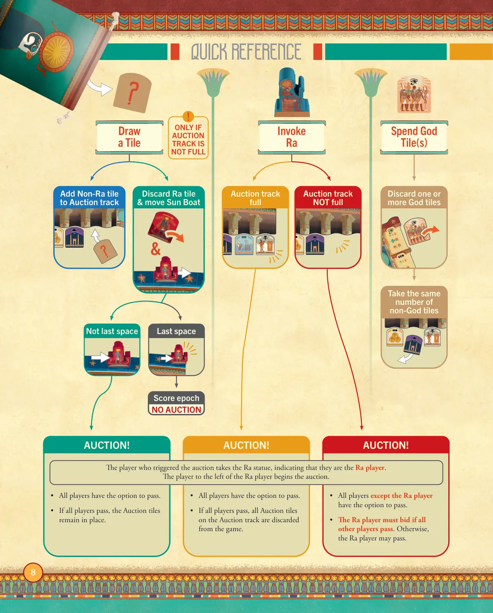

☀️ RA 太阳神
Ra · 设计：Reiner Knizia · 25th Century Games 出版 · 2–5 人 · 官方英文规则书全文翻译（8 页 · AI 辅助机翻）
本页收录《RA 太阳神》（Ra, 1999）的原版官方规则书全部 8 页（底本：25th Century Games 官方上传（BGG Files），english-edition-rulebooks-25th-century-games），逐页随图排列，点击任意图片即可放大查看；每页下方默认折叠了该页的 AI 辅助中文机翻对照，需要时可展开。规则内容归 25th Century Games 及版权方所有，收录仅供个人学习查阅。
整理说明：机翻对照按本站术语口径对齐（牌库/手牌/回合/轮/板块/指示物等），PDF 图文混排页的语序可能与原书视觉顺序略有出入；规则细节请一律以页面上方原书页面为准。

📝 第 1 页 AI 机翻对照（点击展开）
游戏组件
概述
古埃及的古老王国是一个
繁荣与安定的时期。国王们
建立了一个强大的官僚体系，
帮助管理国家的巨额财富。
然而，国王们不仅被视为埃及的
政治统治者，也被视为宗教领袖。
国王们实际上被认可为拉的
儿子，他们统治的主要目标是
维持玛亚特（ma'at）——
生活的平衡与和谐。
在《Ra》中，你将扮演一
系列古埃及国王的角色，在
统治广阔王国的同时寻求
维护玛亚特。在三个纪元中，
你将努力提升埃及的文化
和你王室血脉的力量，同时
遵循诸神的指引。在你的统治期间，
你只有有限的时间，因此你必须明智地
决定如何度过你的每一天。最终，
你希望你已经取悦了诸神，
足以在来世进入芦苇之野。
1分值
记分指示物
2分值
记分指示物
5分值
记分指示物
10分值
记分指示物
布袋
40个纪念碑板块（8种类型）
阶梯金字塔
神庙
圣祠
陵墓
雕像
方尖碑
金字塔
狮身人面像
地震
5个
5个
5个
5个
5个
5个
5个
5个
2个
法老
葬礼
25个
2个
神
黄金
Ra
30个
5个
8个
25个文明板块（5种类型）
战争
艺术
宗教
文字
农业
天文
4个
5个
5个
5个
5个
5个
37个河流板块
（2种类型）
洪水
尼罗河
干旱
12个
25个
2个
灾难板块
玩家版图
5个
Ra雕像
1个
纪元计数器
1个
竞标版图
1个
太阳船标记
1个
太阳圆盘
16个
15个
25个
25个
15个
竞拍
板块

📝 第 2 页 AI 机翻对照（点击展开）
设置
将拍卖版图放在桌子中央，所有玩家都能触及，带有太阳船图标 1 的面朝上*。将拉 2 雕塑放在附近。将太阳船指示物放在拉轨道上（拍卖版图的顶部），放在对应玩家数量 3 的起始格上。将纪元指示物放在拉轨道的右上角，第一纪元面朝上 4 。
随机给每位玩家他们自己的玩家版图，翻到显示蓝色椭圆内正确玩家数量的一侧 5 。将所有拍卖板块放入布袋中 6 。摇晃布袋几次以混合板块。
在每个玩家面前放置两个5分分值指示物，面朝下 7 。将剩余的分值指示物面朝上放在拍卖版图附近 8 。将"1"太阳圆盘放在拍卖版图中央的格子上 9 。
对于玩家版图上的每个蓝色椭圆，每位玩家取与正确玩家数量旁边显示的值相匹配的太阳圆盘，并将其放在该格子上 10 。请注意，每种玩家数量的值都不同。下表显示了所有起始太阳圆盘的值。
- 太阳船已添加到本版中，以增强桌上拉神话的主题表现。如果您希望不使用它，只需将拍卖版图翻到另一面，并在抽取板块时直接将其放在轨道上方。
太阳圆盘起始组
| 2玩家 | 3玩家 | 4玩家 | 5玩家 |
|-------|-------|-------|-------|
| (仅使用圆盘1-9) | (仅使用圆盘1-13) | (仅使用圆盘1-13) | |
第一纪元
玩家数量显示在蓝色椭圆的顶部和底部。
4人游戏设置示例
这个椭圆在3人游戏中应以13值的太阳圆盘开始，在2人游戏中应以9值的太阳圆盘开始。
第二纪元
3人和2人侧 | 4人和5人侧

📝 第 3 页 AI 机翻对照（点击展开）
进行游戏
一场拉(Ra)游戏由三组回合组成，称为时代(epoch)。在每个时代中，玩家将执行行动，以建设他们的社会并提升他们的文化，为他们赢得奖励和荣誉。
拥有最高编号太阳盘(sun disk)的玩家在每个时代中获得第一回合。游戏按顺时针方向继续，直到时代结束，此时所有太阳盘都面朝下，或者太阳船(Sun Boat)已到达拉(Ra)轨道的末端。
在每个时代结束时进行一轮计分，之后随着新国王的登位为下一个时代做准备，许多成就将被清除。
在第三时代结束并进行最后一轮计分后，游戏结束。此时，得分最高的玩家获胜！
行动
在玩家的回合中，必须执行以下行动之一：
摸取板块
玩家从袋中摸取一块板块。如果是拉板块(Ra tile)，请遵循下方拉板块的说明。如果是任何其他板块，将其放置在拍卖轨道(auction track)上最左边的空位。
如果拍卖轨道已满，则不能执行摸取板块行动。
拉板块
当摸到拉板块时，将该板块弃置，并将太阳船在拉轨道上向右移动一格。
然后玩家获得拉雕像(Ra statue)并开始拍卖（参见"拍卖" - 第4页）。
如果太阳船被移动到拉轨道的最后一个格子，时代立即结束，不完成拍卖（参见"时代" - 第5页）。
呼唤拉
玩家说"我呼唤拉！"并拿走拉雕像，然后开始拍卖（参见"拍卖" - 第4页）。
当玩家呼唤拉时，太阳船不会前进。
花费神板块
玩家弃置一张他们在先前拍卖中获得的神板块(God tile)，以从拍卖轨道上获取任意一张非神板块。
神板块被从游戏中弃置。从拍卖轨道上获得的板块被面朝上放置在玩家面前。如果获得的板块是灾难板块(Disaster tile)，立即解决它。
玩家可以在同一行动中重复这些步骤来花费额外的神板块，在开始下一个交换前完全解决每个交换。
当玩家完成他们的行动后，他们的回合结束，游戏继续顺时针进行到下一位玩家。
当玩家不再有任何面朝上的太阳盘时，他们在该时代中不能再执行行动。在他们的回合中，游戏继续顺时针进行到下一位玩家。
如果在一轮中只有一位玩家仍有未使用的太阳盘，他们可以正常进行他们的回合，直到该轮以通常方式结束（当太阳船到达拉轨道的末端，或所有太阳盘都被使用时）。

📝 第 4 页 AI 机翻对照（点击展开）
拍卖
两种不同的事件可以触发拍卖：在进行"抽取板块"行动时抽到Ra板块，或者当玩家执行"召唤Ra"行动时。
竞标
触发拍卖的玩家获得Ra雕像，表明他们是Ra玩家。每次拍卖从Ra玩家左侧的玩家开始，顺时针进行。当轮到玩家竞标时，他们可以将一张正面朝上的太阳圆盘放置在游戏板边缘附近进行竞标。每次拍卖的第一张竞标可以是任意价值的太阳圆盘。随后的每次竞标必须比前一次竞标价值更高。如果玩家无法竞标（或选择不竞标），他们可以弃权。每位玩家只能竞标（或弃权）一次。拍卖总是以Ra玩家结束。拍卖的条件根据触发方式和时间而有所不同：
在"抽取板块"行动中抽到Ra板块
• 所有玩家都可以选择弃权。
• 如果所有玩家都弃权，拍卖板块和太阳圆盘保持原位。
在拍卖轨道已满时召唤Ra
• 所有玩家都可以选择弃权。
• 如果所有玩家都弃权，拍卖轨道上的所有拍卖板块将被弃置出游戏。太阳圆盘保持原位。
在拍卖轨道未满时召唤Ra
• 除Ra玩家外的所有玩家都可以选择弃权。
• 如果所有其他玩家都弃权，Ra玩家必须竞标。否则，Ra玩家可以弃权。
在每次拍卖结束时（无论结果如何），游戏从Ra玩家处继续顺时针进行。
赢得拍卖
竞标价值最高的玩家是拍卖赢家，并获得拍卖轨道上的所有拍卖板块。这些拍卖板块被正面朝上地放置在赢家面前，紧挨着其玩家板。每种类型的拍卖板块在玩家板周围都有指定的位置，如每个拍卖板块顶部的图标所示。所有其他玩家将其太阳圆盘正面朝上地放回其玩家板。这些圆盘可以在之后的拍卖中再次使用。大多数拍卖板块直到计分时才会生效（参见"计分" - 第5页）。此外，赢家将其用于赢得拍卖的太阳圆盘板块与拍卖板上的太阳圆盘进行交换。获得的太阳圆盘被背面朝上地放置在其玩家板上。最后，赢家必须在游戏恢复前解决从拍卖中获得的所有灾难板块。
灾难板块
在将拍卖中赢得的板块放置在其玩家板上后，赢家必须解决在拍卖中获得的所有灾难板块，方法是弃置两张与其玩家板上每个灾难板块所示类型相同的拍卖板块（如果可能）。如果他们只有一张匹配的板块，他们必须将其弃置出游戏。如果他们没有匹配的拍卖板块，则什么都不会发生。然后，灾难板块
被弃出游戏。
计分

📝 第 5 页 AI 机翻对照（点击展开）
所有玩家的太阳圆盘
已被打出且
为面朝下状态。
太阳船已进入
Ra轨道的最右侧空间，
其中包含时代标记或图标。
板块分布
请注意，每种板块的数量
在其图标旁边标明。红色数字表示
相关灾难板块的数量。河流板块上
灾难图标上方的链接图标表示
共有两个灾难板块，但它们同时适用于
尼罗河板块和洪水板块。
如果满足以下两个条件之一，将立即触发计分：
记住，太阳船进入Ra轨道的最右侧空间
不会触发拍卖。
当计分发生时，玩家根据他们面前朝上的
拍卖板块的每种类型计分标准获得分数
（参见第6-7页）。
玩家通过从供应区中取出相应价值的
计分标记来记录他们的分数。在整个游戏过程中，
计分标记应保持面朝下，对对手隐藏。
玩家的分数不可能低于零。如果玩家在每个时代
结束后的累计分数低于零，则其总分将为零。
玩家板块上的时代图标表示何时应该对一组
拍卖板块进行计分：
：这组板块在第一、第二和第三时代结束时计分。
：这组板块仅在第三时代结束时计分。
如果在第一或第二时代发生计分/
除了纪念碑板块（它们要到第三时代结束时
才计分）外，你玩家板块旁边的所有拍卖板块
都根据其计分标准进行计分（参见第6-7页）。
然后，开始一个新时代（参见"开始新时代" - 右侧）。
如果在第三时代发生计分
你玩家板块旁边的所有拍卖板块
都根据其计分标准进行计分（参见第6-7页），
包括纪念碑板块。
此外，玩家在游戏结束时拥有的太阳圆盘
也会被计分。
玩家将他们所有太阳圆牌（面朝上和面朝下）的数值相加
得到他们的太阳总分。总分最高的玩家获得5分，
而总分最低的玩家失去5分。在平局的情况下，
所有平局玩家将获得或失去全部分数。如果所有玩家的
总分相同，则没有人获得或失去分数。
游戏现在结束（参见"赢得游戏" - 右侧）。
开始
新时代
一旦所有拍卖板块都被计分，
每个玩家就从游戏中
丢弃其玩家板块右侧的所有
拍卖板块（由玩家板块右上角的
图标表示）。
他们玩家板块左侧的所有
拍卖板块将保留到游戏结束，
除非被灾难板块移除
（由玩家板块左上角的
图标表示）。
此外，丢弃任何拍卖板块
留在游戏中的拍卖轨道上。拍卖板上的太阳圆盘应保持在原位。
将太阳船放回Ra轨道上的起始格（根据玩家数量），并按如下方式调整时代计数器：
如果时代计数器在其第一时代面，将其翻到第二时代面：
如果时代计数器在其第二时代面，将其弃置，以揭示版图上的第三时代图标：
然后，所有玩家将他们的太阳圆牌翻面朝上。
当前拥有最高价值太阳圆牌的玩家在下一个时代获得第一回合。
赢得游戏
在计分第三时代后，总分最高的玩家获胜！如果有两名或更多玩家平局，则拥有编号最高太阳圆牌的平局玩家获胜。

📝 第 6 页 AI 机翻对照（点击展开）
拍卖板块效果与计分
每种拍卖板块的计分标准已在上方详细说明。在玩家版图上也有每个标准的提醒，以及太阳圆盘计分。
玩家版图上的所有计分标准
也提醒了这些板块在哪些纪元计分：
每种拍卖板块（除Ra板块外）都有一个图标来标识其类型以及应放置在玩家版图旁边的位置：
纪念碑板块
法老板块
神灵板块
黄金板块
文明板块
尼罗河板块
洪水板块
所有纪元计分
仅在第三纪元计分
仅限第三纪元计分
玩家通过两种不同方式为他们的纪念碑板块获得分数：
多样性
每组3/4/5个相同的纪念碑板块价值5/10/15分。
多样性
如果玩家拥有6种或更少不同类型的纪念碑板块，每种类型获得1分。
如果他们拥有7/8种不同类型，获得10/15分。
注意：板块放置在顶部或底部行并不重要。所有板块都将根据多样性和多样性计分。
纪念碑板块
8种类型
第一、第二及第三纪元计分
拥有最多法老板块的玩家获得5分。
拥有最少法老板块的玩家失去2分。
如果所有玩家拥有相同数量的法老板块，则没有得分或失分。
法老板块
第一、第二及第三纪元计分
如果玩家至少有一个洪水板块，他们的每个尼罗河板块获得1分。如果他们没有洪水板块，他们的尼罗河板块没有价值。
尼罗河板块

📝 第 7 页 AI 机翻对照（点击展开）
第一、第二和第三时代计分
玩家每张未使用的神板块获得2分。
作为一个行动，神板块可以被花费以从竞标轨道上获取非神板块。
神板块
第一、第二和第三时代计分
玩家每张黄金板块获得3分。
黄金板块
第一、第二和第三时代计分
拥有3/4/5种不同类型的文明板块的玩家获得5/10/15分（只计算你最大的组合）。
没有文明板块的玩家失去5分。
文明板块
5种类型
第一、第二和第三时代计分
玩家每张洪水板块获得1分。
拥有至少一张洪水板块也允许玩家对其尼罗板块计分。
例如：一张洪水板块和三张尼罗板块价值四分。
两张洪水板块和没有尼罗板块价值两分。
零张洪水板块和4张尼罗板块价值零分。
洪水板块
抽到时：
将太阳船沿Ra轨道前进一格。
这会触发一次竞标，除非Ra轨道的末端已到达。
然后，弃置Ra板块。
Ra板块
获取时：
如果可能，弃置两张图标与灾难板块上所示图标匹配的竞标板块。如果你少于两张指定类型的竞标板块，则尽可能多地弃置。然后，弃置灾难板块。
在解决干旱板块时，如果可能，先弃置洪水板块，然后是尼罗板块。
灾难板块
4种类型
作者和出版社感谢所有测试玩家的投入以及他们提出的众多建议和意见：
Susanne Armbruster, Chris Bowyer, Dave Farquhar, Walburga Freudenstein,
Martin Higham, Markus Huber, Sandra Huber, Ross Inglis, Kevin Jacklin, Christine Jilke,
Chris Lawson, Ivan Towlson, and Dominik Wagner.
© Dr. Reiner Knizia, 1999-2025. 保留所有权利。
游戏设计：Dr Reiner Knizia
平面设计与插图：Ian O'Toole
规则书编辑：Ric White
制作与开发：Chad Elkins
鸣谢

📝 第 8 页 AI 机翻对照（点击展开）
拍卖轨道
未满
弃掉一张或多张
神板块
拿取相同数量的
非神板块
拍卖轨道
已满
拍卖！
拍卖！
拍卖！
快速参考
&
弃掉 Ra 板块并移动太阳船
不是最后格
将非 Ra 板块添加到
拍卖轨道
计分时代
无拍卖
最后格
• 所有玩家可以选择弃权。
• 如果所有玩家都弃权，拍卖板块将留在原位。
• 所有玩家可以选择弃权。
• 如果所有玩家都弃权，拍卖轨道上的所有拍卖板块将被弃出游戏。
• 除 Ra 玩家外的所有玩家可以选择弃权。
• 如果所有其他玩家都弃权，Ra 玩家必须竞标。否则，Ra 玩家可以弃权。
触发拍卖的玩家获得 Ra 雕像，表明他们是 Ra 玩家。
Ra 玩家左边的玩家开始拍卖。
摸取
板块
召唤
Ra
花费
神板块(们)